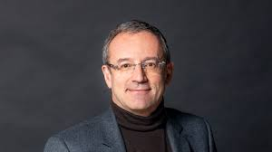
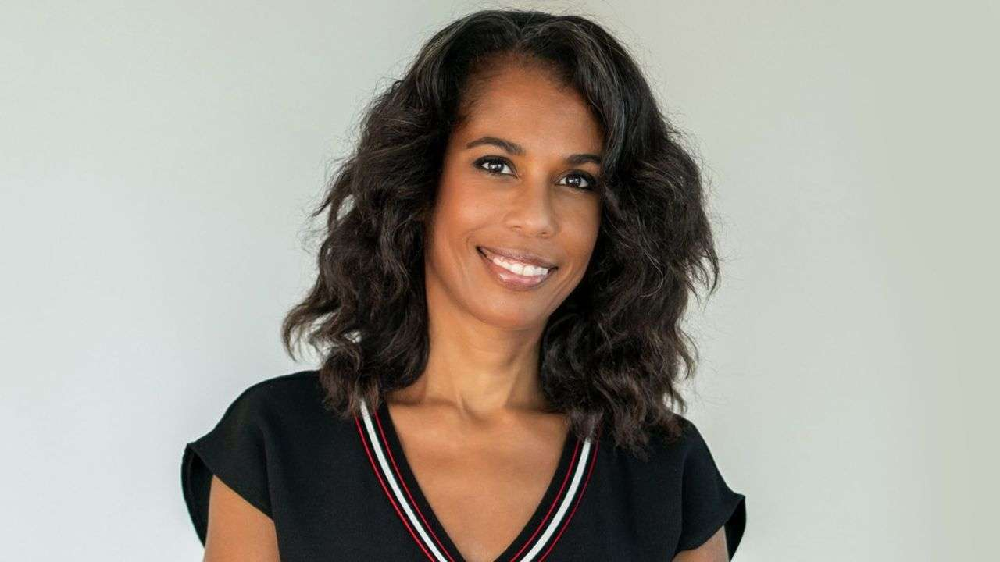

Jean-François FALLACHER
Jean-François Fallacher a une longue carrière chez Orange, ayant dirigé des filiales dans plusieurs pays avant d’être nommé CEO en 2023.
Elizabeth TCHOUNGUI
Elizabeth Tchoungui est Directrice exécutive en charge de la responsabilité sociétale et environnementale depuis 2023.
Jean-François FALLACHER est le CEO actuel d'Orange depuis le 3 avril 2023, cependant à partir
de 2011 il fut désigné comme CEO des groupes d'orange dans de nombreux pays comme la Roumanie en
2011, Pologne en 2016 ou encore Espagne en 2020.
Elizabeth TCHOUNGUI est la Directrice Exécutive en charge de la responsabilité sociétale et environnementale du Groupe depuis le 3 avril 2023. Elle fut la première journaliste africaine à présenter le journal de TV5 Monde et la première femme à présenter le magazine hebdomadaire culturel de France 2.
Le créateur de l'entreprise France Télécom est inconnu, il
est resté anonyme. En revanche, le 1er janvier 1991, Marcel
Roulet fut désigné comme le premier président.
L'entreprise compte 136 000 salariés en revanche seul 30% sont des femmes. Cependant, Orange a des politiques en faveur de l'égalité et tente d'augmenter la représentation des femmes, notamment dans les postes de direction.